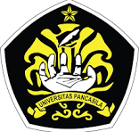
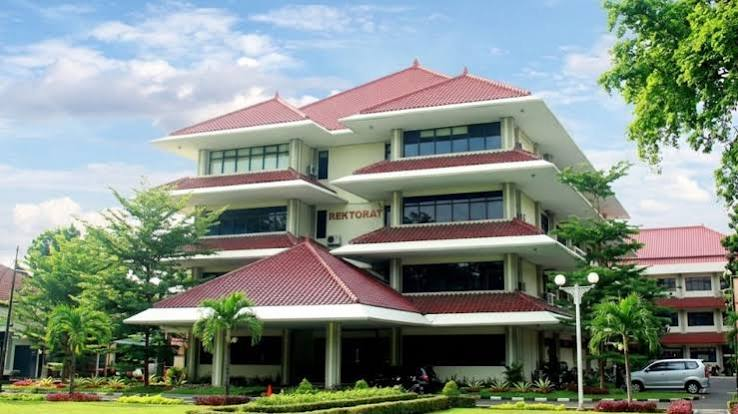

Universitas Pancasila adalah perguruan tinggi swasta terkemuka di Indonesia yang berdiri pada 28 Oktober 1966 dan saat ini telah terakreditasi Unggul.
Universitas ini merupakan hasil penggabungan dari dua universitas terdahulu, yaitu Universitas Pancasila (lama) yang didirikan pada tahun 1963 dan Universitas Bung Karno.
Foto Gedung Rektorat

Universitas Pancasila Menyajikan Program keahlian :
1. Registrasi Akun & Pengisian Data
2. Memilih Jalur Seleksi & Program Studi
3. Pembayaran Biaya Pendaftaran
4. Proses Seleksi & Pengumuman
5. Daftar Ulang & Registrasi Dokumen
Hubungi kami melalui saluran berikut
Kirim pertanyaan anda ke info@univpancasila.ac.id
Jl. Lenteng Agung Raya No.56, RT.1/RW.3, Srengseng Sawah, Kec. Jagakarsa, Kota Jakarta Selatan, Daerah Khusus Ibukota Jakarta 12630. (Lokasinya sangat strategis dan terintegrasi langsung dengan Stasiun KRL Universitas Pancasila).
Telepon (021) 7270086